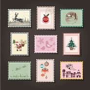
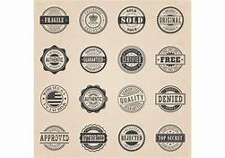

Stamp catalogs are MUST HAVE items for all stamp collectors. A catalog contains information on how to identify, categorize, and organize your stamps and on determining a "catalog" valuation for your stamp collection. Complete Set of 2018 Scott Catalogues For further information on the stamp valuations printed in catalogs, please see the "Postage Stamp Values - What is Catalog Value" article in the Selling Stamps section of this website. Catalogs also help in determining the technical aspects of a particular stamp, whether it be a watermark, perforations, printing varieties, color shades, cancellations, on cover premiums, etc., all of which make a big difference in correctly attributing a stamp to being a particular catalog number. Depending on what your collecting interest is, there are many different possibilities of which types of catalog(s) you may require for your collection. Catalogs are a necessary "requirement" of our hobby, and they have become horrendously expensive. For my website content, my eBay Store, my US stamp collection, and for general worldwide reference, I have to maintain a set of the Scott Postage Stamp Catalogs, published annually, now in fourteen volumes, which retails for about $800 currently. With my specialties, I must maintain relatively current editions of the Michel and Zumstein catalogs. In addition to that there are books on specialty subjects, such as postmarks and plating. I also have Sassone, Gibbons, Yvert-Tellier, and Zagorsky catalogs, for which I do not maintain current editions.  There are other catalogs that are so rare, such as some of the ones on Austrian Imperial postmarks and classical American stamps, that they only exist in advanced philatelic reference libraries. In a few cases, I have been able to borrow some of these, and, using Adobe Acrobat, have scanned them to electronic PDF files. Whatever one's interests are, one of the major expenses any collector / philatelist will incur will be the cost of their "philatelic reference library". Articles in this section will be about the various types of catalogs and the catalog publishers. Whether your interests are in collecting a specific country or countries, a particular thematic, or possibly the entire world, your particular needs should be addressed here. New articles will be added soon. Please follow the links at the upper right to each article.  First Edition of the Scott Catalogue September 1868 (21 Pages) - Cost $0.15 The first edition of the Scott Catalogue, published in 1868, is shown above. Those were truly the "golden days of collecting", when just about anyone could almost "complete" the World, for a very small investment. eBay Auction and Store Links Stamp Catalogs The following links feature category-focused affiliated seller listings on various eBay sites worldwide. They may enable visitors to shop for and to buy specific items for the particular collecting subject they've just read about. The affiliated eBay seller auction and store lots provided by eBay, Inc. are not the responsibility of the management of this website. eBay-US-Stamps-Publications (Scott) eBay-US-Stamps-Publications (Brookman) eBay-US-Stamps-Publications (Unitrade) eBay-US-Stamps-Publications (Michel) eBay-US-Stamps-Publications (Netto) eBay-US-Stamps-Publications (Yvert) eBay-US-Stamps-Publications (Sassone) eBay-US-Stamps-Publications (Gibbons) eBay-US-Stamps-Publications (Zagorsky) eBay-US-Stamps-Publications (Facit) Return to Home Page from Stamp Catalogs SBI! Stamp-Collecting-World.com Serving Philatelists and Stamp Collectors Since 2010 Webmaster --- David H. Aeschliman, APS, AHPS Home Collecting Information Stamp Collecting Essential Supplies Stamp Albums Stamp Catalogs Stamp Condition Stamp Forgeries Buying Stamps Selling Stamps Philatelic Terms Philatelic Links FAQ Collecting Categories Albania Andorra Austria - Empire Austria - 1st. Republic Austria - 2nd. Republic Belgium British North America Bulgaria Canada Cyprus Czechoslovakia Danzig Denmark Estonia Faroe Islands Finland France Germany - States Germany - Empire Germany - Plebiscite Germany - Weimar Germany - Third Reich Germany - G. Occ. Germany - A. Occ. Germany - BRD Germany - W. Berlin Germany - DDR Gibraltar Great Britain Greece Greenland Hungary Iceland Ireland Italy - States Italy - Kingdom Latvia Liechtenstein Lithuania Luxembourg Malta Mexico Monaco Montenegro Netherlands Norway Poland Portugal Romania Russia Saar St Pierre & Miquelon San Marino Serbia Spain Sweden Switzerland USA - Classics USA - Modern USA - Revenue Vatican Yugoslavia Stamps For Sale eBay Store Other Categories Search This Site Privacy Policy prevnext